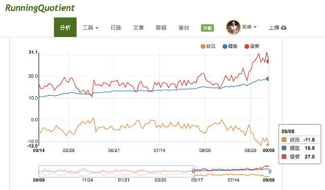
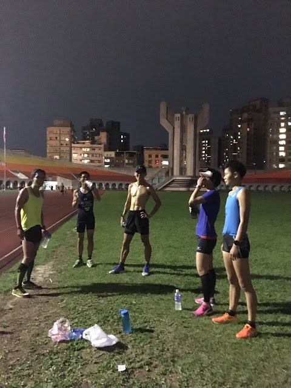

【狀況指數-11.8】忍住別跑

昨天從花蓮北上特意繞去看譽寅帶選手訓練，到板橋田徑場時他們已經在熱身了，看著看著就忍不住去換跑褲跟著做動作，接著很自然地就跟著用五分速熱身跑，但跑了幾分鐘後才強迫自己停下來：「要忍住！保存能量！」「早上已經跑了 21K 了，不可能那麼快恢復，要好好休息！」
因為女兒上週六開始有感冒症狀，而我從那時開始連續好幾天的狀況指數都在「-10」附近徘徊，果不其然也被感染了，開始有流鼻水的症狀……但早上還是把課表跑完，跑完反而舒暢多了，而且狀態比上星期還好，真神奇。可能是覺得身體不舒服，所以反而更不在意、更放鬆的結果：21K 費時 1:30:52 (配速 4:19/km，平均心率區間 2.8，訓練指數 56)。

到田徑場時身體其實很舒服，也很想跑，但我知道「訓練指數 56」是不可能幾小時就恢復回來的，必須忍住別跑。在一旁看著譽寅、培宇、淑苓、大師兄一圈一圈流暢地從眼前滑過，「好想跑」的衝動跟著扶搖直上……我想起博士要我保存體力為週日的十公里訓練做好準備，所以為了克制衝動，我把注意力轉回場內的何云和文瓊，用聊天分散衝動。
熱身完，他們今天的課表是四趟 1km+三趟 600m(維持 3:40/km 的配速)！四個人的速度出來後，就像是 Discovery 節目中草原上集體奔馳的野馬一樣，有一種說不出的美感，是一種會吸引你進入與參與其中的美，最後實在忍不住還是下場跟了三趟 600m！
好久沒有跟一群有速度的跑者跑間歇了，那種感覺很奇妙，一群人一起快速奔跑時，我們好像帶著身旁的空氣一起前進，共同創造出一種特殊的氣場，不只跑起來更輕鬆，也好像與外界隔絕開來似的。
我的忍功有待加強！跑了教練課表以外的課表，是很不好的事。我自己知道，但要完全做到真的很難(但對我來說難的事才有趣)。回程的路上我想著訓練有幾層心境：
第一層：還在為「要不要跑」而掙扎；
第二層：出門前還要「逼自己」跑課表；
第三層：每次訓練前都會有「想跑」、想跟課表「戰鬥」的心情。我以為那就是最高的境界，但我昨天體會到應該還有再上一層境界：
「動心忍性」
該練時要忍住其他衝動，堅持訓練；
不該練時也要忍住不練的衝動，堅持休息。